|
 |
| АМРОСТАК СОЛОФАРМ (AMROSTAK SOLOPHARM) fondaparinux sodium раствор д/в/в и п/к введения | ||||||
|
Клинико-фармакологическая группа: Антикоагулянт - прямой ингибитор фактора Xa Номер и дата регистрации: ЛП-№(000953)-(РГ-RU) от 28.06.22 Код ATX: B01AX05 |
Владелец регистрационного удостоверения: зарегистрировано и произведено Представительство: | |||||
Форма выпуска, состав и упаковка Раствор для в/в и п/к введения прозрачный, бесцветный или слегка желтоватый.
Вспомогательные вещества: натрия хлорид, 0.01М хлористоводородная кислота или 0.005М раствор натрия гидроксида, вода д/и. 0.5 мл - шприцы стеклянные (2) - упаковки ячейковые контурные (5) - пачки картонные. * укомплектованные устройствами предохранительными или защитными этикетками для игл, или без устройств предохранительных или защитных этикеток для игл. | ||||||
| ||||||
Описание препарата основано на официально утвержденной инструкции по применению и утверждено компанией-производителем для издания 2023 г. | ||||||
Фармакологическое действие |
Фармакокинетика |
Показания |
Режим дозирования |
Побочное действие |
Противопоказания |
Беременность и лактация |
Особые указания |
Передозировка |
Лекарственное взаимодействие |
Условия хранения и сроки годности |
Условия реализации
Фармакологическое действие
Действующее вещество препарата Амростак солофарм - фондапаринукс натрия, блокирует фактор свертывания Ха – вещество, участвующее в образовании тромбов в кровеносных сосудах. Показания
Режим дозирования
Применяют п/к и в/в. Не следует применять в/м. Рекомендуемые дозы В/в введение - первая доза только у пациентов при инфаркте миокарда с подъемом сегмента ST Препарат Амростак солофарм вводится непосредственно в катетер или с использованием мини-контейнеров с 0.9% раствором натрия хлорида (25 или 50 мл), в котором предварительно разводится препарат. При использовании препарата Амростак солофарм в шприцах во избежание потери препарата не следует перед инъекцией удалять пузырьки воздуха из шприца. После инъекции катетер промыть достаточным количеством 0.9% раствора натрия хлорида для обеспечения доставки полной дозы препарата. При введении с использованием мини-контейнеров инфузия должна проводиться в течение 1-2 минут. Профилактика венозных тромбоэмболических осложнений у взрослых пациентов, подвергающихся серьезным ортопедическим операциям нижних конечностей Профилактика венозных тромбоэмболических осложнений у взрослых пациентов, подвергающихся операциям на брюшной полости, при наличии факторов риска тромбоэмболических осложнений Рекомендованная доза препарата Амростак солофарм составляет 2.5 мг 1 раз/сут после операции. Начальную дозу вводят не ранее, чем через 6 ч после завершения операции, при условии, что нет нарушений свертываемости крови, развившихся после операции. Курс лечения должен продолжаться в течение периода повышенного риска развития венозных тромбоэмболических осложнений, не менее 5-9 дней. Профилактика венозных тромбоэмболических осложнений у взрослых пациентов нехирургического профиля при наличии факторов риска таких осложнений в связи с ограничением подвижности в остром периоде заболевания Рекомендованная доза препарата Амростак солофарм составляет 2.5 мг п/к 1 раз/сут. Продолжительность лечения в этом случае составляет 6-14 дней. Лечение тромбоза глубоких вен у взрослых пациентов Лечение тромбоэмболии легочной артерии у взрослых пациентов за исключением гемодинамически нестабильных пациентов или пациентов, которые нуждаются в тромболитической терапии или эмболэктомии Рекомендованная доза препарата Амростак солофарм для п/к введения 1 раз/сут составляет: - 5 мг, при массе тела пациента менее 50 кг; - 7.5 мг, при массе тела пациента 50-100 кг; - 10 мг, при массе тела пациента более 100 кг. Лечение должно продолжаться не менее 5 дней (обычно 5-9 дней) и прекращаться не раньше, чем будет возможен полный перевод на соответствующее лечение аналогичными по действию препаратами, принимаемыми внутрь. Лечение нестабильной стенокардии или инфаркта миокарда без подъема сегмента ST Рекомендованная доза препарата Амростак солофарм составляет 2.5 мг п/к 1 раз/сут. Лечение следует начинать как можно быстрее после установления диагноза и продолжать в течение 8 дней или до выписки пациента из стационара, если она произошла ранее, чем через 8 дней. Лечение инфаркта миокарда с подъемом сегмента ST Рекомендуемая доза препарата Амростак солофарм составляет 2.5 мг 1 раз/сут. Первую дозу препарата вводят в/в, последующие дозы вводятся п/к. Лечение следует начинать как можно быстрее после установления диагноза и продолжать в течение 8 дней или до выписки пациента из стационара, если она произошла ранее, чем через 8 дней. Лечение острого симптоматического тромбоза поверхностных вен нижних конечностей у взрослых пациентов без сопутствующего тромбоза глубоких вен Рекомендуемая доза препарата Амростак солофарм составляет 2.5 мг п/к 1 раз/сут. У пациентов с высоким риском тромбоэмболических осложнений продолжительность лечения должна составлять не менее 30 дней и не более 45 дней. Пациенты с нарушением функции почек Профилактика венозных тромбоэмболических осложнений - у пациентов с нарушениями функции почек повышен риск кровотечений и венозных тромбоэмболических осложнений, поэтому фондапаринукс следует применять с осторожностью. Данных по применению препарата Амростак солофарм у пациентов с тяжелыми нарушениями функции почек недостаточно. Лечение тромбоза поверхностных вен - препарат Амростак солофарм не рекомендуется при тяжелом нарушении функции почек (КК <20 мл/мин). При нарушениях функции почек средней тяжести (КК от 20 до 50 мл/мин) доза должна быть снижена до 1.5 мг 1 раз/сут. Если пациент забыл вовремя ввести очередную дозу, пропущенную дозу необходимо ввести как можно скорее после того, как пациент вспомнил о ней. Не следует принимать двойную дозу, чтобы компенсировать пропущенную дозу. Не следует прекращать лечение самостоятельно, это может привести к повышенному риску тромбообразования. Способ применения Препарат Амростак солофарм предназначен для применения только под контролем врача. Пациенту разрешается самостоятельно проводить п/к инъекции, только если врач посчитает это необходимым, с обязательным последующим наблюдением у врача и только после проведения соответствующего обучения технике проведения п/к инъекции. Местом п/к введения должны быть попеременно левая и правая переднебоковые поверхности передней брюшной стенки. Во избежание потерь препарата не следует перед инъекцией удалять пузырьки воздуха из шприца. Игла должна вводиться на всю длину перпендикулярно в складку кожи, зажатую между большим и указательным пальцем: складку кожи не разжимают в течение всего введения. Инструкция по использованию защитной этикетки для иглы (при наличии) Не вскрывая упаковку, проверить целостность шприца, а также отсутствие жидкости в контурной ячейковой упаковке. Если есть сомнения в целостности шприца или его герметичности, следует взять другую упаковку. Открыть контурную ячейковую упаковку. Проверить содержание препарата в шприце. 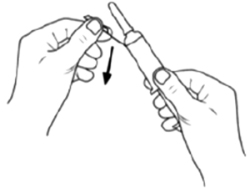 Внимание: не снимать защитный колпачок до изгиба защитной этикетки! Согнуть защитную этикетку для иглы в сторону приблизительно на 90°. 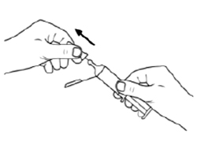 Снять защитный колпачок. 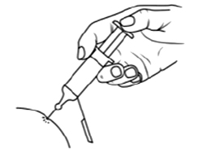 Сделать инъекцию, как обычно. 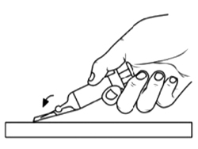 Внимание: не закреплять иглу в защитную этикетку пальцами! Одной рукой закрепить иглу путем размещения защитной этикетки на жесткой устойчивой поверхности. Затем нажать на защитную этикетку. 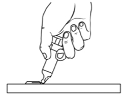 Согнуть защитную этикетку приблизительно на 90° до тех пор, пока игла со слышимым щелчком не окажется в пластиковой части защитной этикетки. 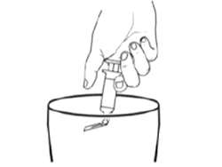 Утилизировать одноразовый шприц с иглой в мусорный контейнер. Инструкция по использованию устройства предохранительного (при наличии) Внешний вид шприца перед применением 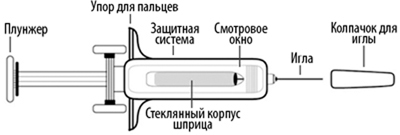 Внешний вид шприца после применения 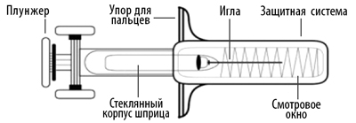 Техника подкожного введения Не вскрывая упаковку, проверить целостность шприца, а также отсутствие жидкости в контурной ячейковой упаковке. Если есть сомнения в целостности шприца или его герметичности, следует взять другую упаковку. Открыть контурную ячейковую упаковку. Проверить содержание препарата в шприце. 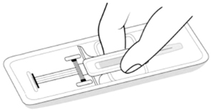 Внимание: вынимая шприц из упаковки, не следует тянуть шприц за плунжер или колпачок для иглы. Вынуть шприц из упаковки, как показано на рисунке. 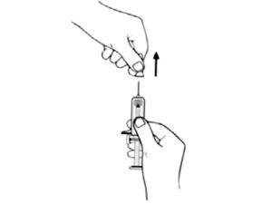 Внимание: не снимать колпачок иглы, держась за плунжер или основание иглы. Снять колпачок иглы, как показано на рисунке, держась за защитную систему во избежание травмирования или изгиба иглы. 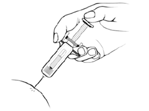 Сделать инъекцию, как обычно. 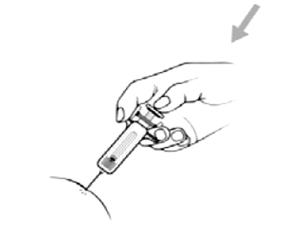 Зажав корпус шприца между указательным и средним пальцами, надавить на плунжер вниз до упора, чтобы ввести весь раствор. Внимание: раствор должен быть введен полностью для срабатывания защитной системы. 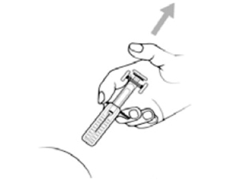 После завершения инъекции следует воспользоваться одним из предложенных вариантов: 1) Вынуть иглу из места инъекции и отпустить плунжер. Дождаться, пока защитная система полностью закроет иглу. 2) Не вынимая иглу из места инъекции, отпустить плунжер. Дождаться, пока защитная система полностью закроет иглу. Внимание: если защитная система не активировалась или активировалась частично - следует выбросить шприц с незащищенной иглой. Поскольку игла не защищена, следует обратить особое внимание на то, чтобы избежать травм. 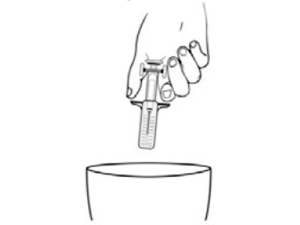 Выбросить шприц с защищенной иглой в мусорный контейнер. Побочное действие
Частота возникновения побочных реакций представлена в соответствии со следующей градацией: часто (не более, чем у 1 человека из 10); нечасто (не более, чем у 1 человека из 100); редко (не более, чем у 1 человека из 1000). Наиболее тяжелые нежелательные реакции (могут возникать редко): внутричерепные/внутримозговые и забрюшинные кровоизлияния; аллергические реакции (включая очень редкие сообщения об ангионевротическом отеке, анафилактоидной и/или анафилактической реакциях). Со стороны иммунной системы возможны реакции гиперчувствительности, включая ангионевротический отек (отек лица и рта, который может приводить к затруднению дыхания или глотания) и анафилактический шок (резкое падение АД и утрата сознания). Со стороны системы кроветворения: часто - анемия, кровотечение, пурпура; нечасто - снижение или увеличение количества тромбоцитов в крови, аномалия тромбоцитов, нарушения свертываемости крови. Нарушения психики: редко - тревога, спутанность сознания, потеря ориентации, сонливость. Со стороны нервной системы: нечасто - головная боль; редко - головокружение, обморок. Со стороны ЖКТ: нечасто - тошнота, рвота; редко - боли в животе, затрудненное и болезненное пищеварение, гастрит, запор, диарея. Со стороны дыхательной системы: редко - одышка, кашель, боли в грудной клетке. Со стороны кожи и подкожных тканей: нечасто - сыпь, зуд. Общие расстройства и нарушения в месте введения: нечасто - гипертермия, отеки рук или ног, выделения из раны; редко - реакции в месте инъекции, боли в нижних конечностях, "приливы", отек гениталий, инфицирование послеоперационной раны. Лабораторные и инструментальные данные: нечасто - аномальные результаты печеночных проб, повышение концентрации ферментов печени в крови; редко - гипокалиемия, повышение концентрации билирубина в крови. Противопоказания
С осторожностью: наследственные или приобретенные нарушения свертываемости крови; язвенная болезнь желудка и двенадцатиперстной кишки в фазе обострения; недавно перенесенное внутричерепное кровоизлияние; оперативное вмешательство на головном, спинном мозге или органах зрения; пациенты пожилого возраста (старше 75 лет); пациенты с низкой массой тела (менее 50 кг); пациенты с нарушением функции почек и печени. Применение при беременности и кормлении грудью
В случае предполагаемой, планируемой или установленной беременности необходимо проконсультироваться с врачом. Накопленные к настоящему времени данные о применении препарата Амростак солофарм у беременных недостаточны, поэтому препарат не следует назначать беременным, за исключением случаев, когда ожидаемая польза для матери превышает потенциальный риск для плода. В период применения препарата Амростак солофарм кормление грудью не рекомендуется. Особые указания
Чрескожное коронарное вмешательство (ЧКВ) и риск тромбообразования в проводниковых катетерах Не рекомендуется использование фондапаринукса натрия непосредственно перед проведением и во время проведения первичного ЧКВ у пациентов с инфарктом миокарда с подъемом сегмента ST. Аналогичным образом, у пациентов с нестабильной стенокардией или инфарктом миокарда без подъема сегмента ST в ситуациях, угрожающих жизни, вызывающих необходимость в экстренной реваскуляризации, не рекомендуется применять фондапаринукс перед ЧКВ и во время него. Это пациенты с рефрактерной или рецидивирующей стенокардией, связанной с динамическим отклонением сегмента ST, сердечной недостаточностью, угрожающими жизни аритмиями или гемодинамической нестабильностью. Монотерапия фондапаринуксом натрия не рекомендуется у пациентов при нестабильной стенокардии и инфаркте миокарда без подъема сегмента ST и при инфаркте миокарда с подъемом сегмента ST во время не первичного ЧКВ ввиду повышенного риска образования тромбов в проводниковых катетерах. Поэтому согласно стандартной практике лечения следует оценить возможность сочетанного назначения нефракционированных гепаринов. Тромбоз поверхностных вен Следует с осторожностью применять фондапаринукс при тромбозе поверхностных вен после склеротерапии или осложнения в интравенозном русле, если был диагностирован тромбоз поверхностных вен в предыдущие 3 месяца или тромбоэмболические осложнения в предыдущие 6 месяцев, или диагностирована злокачественная опухоль. Спинномозговая/эпидуральная анестезия или люмбальная пункция При применении препарата Амростак солофарм одновременно с проведением спинномозговой/эпидуральной анестезии или люмбальной пункции, при проведении серьезных ортопедических операций нельзя исключить возможность кровотечения в месте введения анестезии, которые могут приводить к длительному или постоянному параличу. Риск этих редких явлений может быть выше при применении эпидуральных катетеров после операции или одновременном введении других лекарственных средств, влияющих на гемостаз. Пожилой возраст Пожилые люди более подвержены риску кровотечения. Поскольку функция почек обычно снижается с возрастом, у пожилых людей фондапаринукс медленнее выводится из организма. Препарат Амростак солофарм следует применять с осторожностью у пациентов старше 75 лет. Низкая масса тела
Нарушение функции почек (фондапаринукс натрия, в основном, выводится почками)
Тяжелые нарушения функции печени
Гепарин-индуцированная тромбоцитопения Были получены редкие сообщения о развитии гепарин-индуцированной тромбоцитопении (снижения уровня тромбоцитов, вызванного введением антитромботических препаратов) при применении фондапаринукса натрия. Препарат Амростак солофарм следует применять с осторожностью пациентам, у которых ранее наблюдалась гепарин-индуцированная тромбоцитопения. Дети и подростки Применение препарата Амростак солофарм у детей в возрасте младше 17 лет не изучалось. Данный препарат содержит менее 1 ммоль (23 мг) натрия на 1 дозу, то есть, по сути, не содержит натрия. Влияние на способность к управлению транспортными средствами и механизмами Исследований по изучению влияния препарата на способность управлять транспортными средствами и работать с механизмами не проводилось. Передозировка
Дозы препарата, превышающие рекомендованные, могут привести к повышению риска кровотечения. Если была введена слишком большая доза препарата следует обратиться к врачу. Лекарственное взаимодействие
Не следует применять одновременно с препаратом Амростак солофарм для профилактики венозных тромбоэмболических осложнений препараты, под действием которых повышается риск кровотечения. К таким препаратам относятся препараты, снижающие свертываемость крови, например, гепарин. Препараты, влияющие на свертываемость крови, такие как ацетилсалициловая кислота (например, аспирин), и НПВП (например, ибупрофен) следует применять с осторожностью. В связи с отсутствием данных по совместимости раствор препарата Амростак солофарм не следует смешивать с другими лекарственными средствами. |
||||||
Вернуться наверх |
||||||
Copyright © Справочник Видаль «Лекарственные препараты в России», Москва, Россия